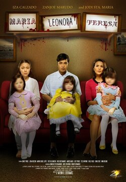
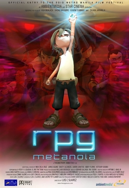

Maria Leonora Teresa is a creepy Filipino horror film that focuses more on grief, fear, and the supernatural. The dolls themselves are already unsettling, pero the movie makes them even scarier through its atmosphere and suspense. Some parts can feel predictable, but it still gives that classic Pinoy horror experience, especially if you like creepy dolls and ghost stories.

Rpg Metanoia (2010)
RPG Metanoia is a unique Filipino animated film that combines video games with real-life problems. It has a fun adventure story, but it also teaches lessons about friendship, family, and growing up. The animation may look dated today, pero the message of the movie still holds up.